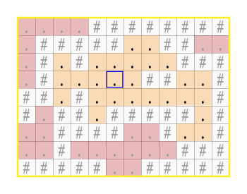

| Kürzel: | asciishop-A03-PP |
| Name: | AsciiShop, Runde#3 |
| Kette: | Asciishop PP |
| Kategorie: | Bildverarbeitung |
Mitgelieferte Datei(en):
Abzugebende Datei(en): AsciiShop.java
Optional abzugebende Datei(en):
Ausführbar: AsciiShop
Die Klasse AsciiShop ist zu erstellen und soll eine ausführbare Klasse sein und muss daher die public static void main(String[] args) Methode beinhalten. Ihr Programm wird automatisch auf Korrektheit überprüft. Die Überprüfung erfolgt durch die Ausführung der als ausführbar bezeichneten Klasse (AsciiShop).
Das Programm liest eine angegebene Anzahl von Zeilen eines ASCII-Bildes ein. Dabei gilt es zu überprüfen, ob alle Zeilen gleich lang sind. Anschließend kann ein fill-Befehl eingegeben werden, dessen Parameter die Position der zu füllenden Fläche beschreibt. Abschließend wird das veränderte Bild sowie seine Breite und Höhe ausgegeben.
| Aufgabenstellung | Klassen und Methoden | Ein- und Ausgabedaten | Bewertung und Kriterien |
| Hinweise | FAQ | Fehlerbehandlung | Testen |
Wie bereits in Runde 1 gilt es, ein ASCII-Bild von der Standardeingabe einzulesen. Vor dem Einlesen des Bildes wird zusätzlich der Befehl read erwartet, dessen Parameter die Anzahl der einzulesenden Zeilen angibt. So bedeutet der Befehl read 5, dass genau 5 Zeilen eingelesen werden sollen. Werden anschließend mehr oder weniger Zeilen als angegeben eingegeben, so soll "INPUT MISMATCH" ausgegeben werden. Die Fehlermeldung soll ebenfalls ausgegeben werden, wenn nicht alle Zeilen gleich lang sind.
String[]) gespeichert.
Wurde das Bild erfolgreich eingelesen, ist danach entweder gar kein Befehl, oder ein- oder mehrmals folgender Befehl zulässig:
fill x y c beginnt, ausgehend von der Position (x,y), alle angrenzenden Pixel, die die selbe Farbe, wie der Ausgangspixel haben, auf c zu setzen (Floodfill, siehe Hinweise unten). Ist die Position unzulässig, so soll "OPERATION FAILED" ausgegeben werden.Geben Sie im letzten Schritt das veränderte Bild zeilenweise aus, gefolgt von dessen Breite und Höhe. Sollte kein fill-Befehl eingelesen werden, so soll das unveränderte Bild gefolgt von dessen Breite und Höhe ausgegeben werden.
Nach dem Einlesen der Bildzeilen kann optional ein oder mehrmals der Befehl fill folgen, dessen Parameter die Position des Startpixels und das Füllzeichen für einen Floodfill Algorithmus (vgl. Floodfill) darstellen. Es soll eine entsprechende Methode geben, die dann ausgeführt werden soll:
In diesem Beispiel soll der Floodfill Algorithmus rekursiv implementiert werden. Dafür wird eine Methode public static void fill(String[] image, int x, int y, char c) benötigt, die sich selbst rekursiv aufruft. Die Methode soll nur mit zulässigen aktuellen Parameterwerten aufgerufen werden, also gültigen Koordinaten (x, y) (Die Methode darf davon ausgehen, dass die aktuellen Paremeterwerte gültig sind, d.h. die Einhaltung der Vorbedingungen wurden vom Aufrufer der Methode überprüft).
Die Methode ersetzt das Zeichen an der angegebenen Position mit dem neuen Zeichen und macht diesen Schritt für alle benachbarten Positionen mit dem selben Zeichenwert in dem sie sich selbst rekursiv aufruft. Als Nachbarschaft wird eine sogenannte Vierer-Nachbarschaft (vgl. Vierer-Nachbarschaft) vorausgesetzt, sprich jeder Pixel hat vier Nachbarn: die über und unter dem Pixel, sowie die links und rechts vom Pixel. Die Methode überprüft für alle vier Nachbarpixel des aktuellen Pixels, ob diese dem zu ersetzenden Zeichen entsprechen (also dasselbe Zeichen beinhalten wie an der aktuellen Position vor der Änderung). Ist das der Fall, wird die Methode an der entsprechenden Nachbarposition rekursiv aufgerufen (Achten Sie auf die Einhaltung von Vorbedingungen). Hat der aktuelle Pixel nicht die zu ersetzende Farbe, so wird dieser Aufruf nicht durchgeführt.
|  |
Wird fill mit der blau gekennzeichneten Position aufgerufen, so werden alle orange gekennzeichneten Pixel gefärbt, da sie mit dem Ausgangspunkt zusammenhängen und die selbe Farbe wie der Ausgangspixel haben.
|
Foldende Tabelle beinhaltet einen beispielhaften Ablauf der Methode fill:
++++++#
|
Das Ausgangsbild image mit mehreren Regionen. Es gibt unter Verwendung der Vierer-Nachbarschaft zwei nicht zusammehängende Regionen, die aus dem Zeichen '#' gebildet werden und drei Regionen, die aus dem Zeichen '+' gebildet werden.
|
++++++#
|
Der Aufruf fill(image, 1, 2, 'o') bewirkt eine Änderung des entsprechenden Zeichens ('#' an der Position (1, 2) wird zu 'o'). Zusätzlich überprüft die Methode welche Nachbarn mit dem Zeichen '#' es gibt (die also zur selben Region zu zählen sind).
|
++++++#
|
Dabei beginnt die Methode beispielsweise mit dem linken Nachbarn. Dieses Zeichen ist ebenfalls zu ändern, da es den Wert '#' hat. Die Methode ruft daher sich selbst mit den aktuellen Parametern fill(image, 0, 2, 'o') auf. An dieser Position (0, 2) gibt es keine weiteren Nachbarn, die geändert werden sollen (daher führt dieser Aufruf zu keinem weiteren Aufruf).
|
++++++#
|
Der nächste Nachbar von (1,2) wird geprüft und fill(image, 1, 1, 'o') wird aufgerufen. Auch hier gibt es keinen weiteren Nachbarn der geändert werden muss.
|
++++++#
|
Der nächste Nachbar von (1,2) wird geprüft und fill(image, 2, 2, 'o') wird aufgerufen. Auch bei diesem Aufruf gibt es keinen weiteren Nachbarn der geändert werden muss.
|
++++++#
|
Die Überprüfung des unteren Nachbarn von (1,2) führt zum rekursiven Aufruf fill(image, 1, 3, 'o'), da dieser Pixel einen zu ändernden Wert hat.
|
++++++#
|
fill(image, 1, 3, 'o') ruft wegen der Überpüfung der Nachbarn von (1,3) wiederum fill(image, 1, 4, 'o') auf.
|
++++++#
|
Für fill(image, 1, 4, 'o') gibt es einen zu ändernden Nachbarn (rechts). Der Aufruf führt daher zu einem weiteren Aufruf...
|
++++++#
|
... und dieser zu einem weiteren Aufruf (Zeichen rechts) ... |
++++++#
|
... und dieser zu einem weiteren Aufruf (Zeichen oberhalb) ... |
++++++#
|
und dieser Aufruf führt schließlich zu keinem weiteren Aufruf, da es keine Nachbarn gibt die geändert werden sollen. |
public static void main(String[] args)public static void fill(String[] image, int x, int y, char c)
System.exit(1)-artige Unterbrechungen in Ihrem Programm.
Am besten verzichten Sie völlig auf System.exit() Aufrufe da dadurch der
laufende JVM gewaltsam terminiert wird.Scanner zum Einlesen von Daten.System.out.print und
System.out.println benutzen. Zum Erzeugen formatierter Ausgaben können
Sie auch System.out.printf benutzen (wird im Allgemeinen aber nicht benötigt).
Beachten Sie, dass wir bei der Beurteilung einen US-amerikanischen Region- und
Spracheinstellungssatz (locale) für die Beurteilung benutzen.
Das bedeutet, dass wir für die Darstellung von double-Werten auch bei
der Ein-/Ausgabe immer den Dezimalpunkt (und nicht Beistrich) benutzen
(z.B. 3.14159 und nicht 3,14159). Falls Sie auf Ihrem Rechner eine andere Einstellung haben,
können Sie zum Testen zuhause auch die Darstellung mit Beistrich benutzen (ist aber nicht
konsistent mit den mitgelieferten Ein-/Ausgabe-Paaren) oder beim Aufruf von Java auch folgenden Befehl
benutzen:
java -Duser.language=en -Duser.country=US AsciiShopdouble-Werten eine Darstellung mit Dezimalpunkt erwartet wird.
Wenden Sie sich bei Problemen mit den Ein-/Ausgabefunktionen bitte an die Tutoren im Labor.
String finden Sie im Skriptum oder in den Vorlesungsfolien.
Verwenden Sie zum Einlesen des Bildes von der Standardeingabe die Klasse Scanner. Relevant sind insbesondere die Methoden next und hasNext bzw. nextLine und hasNextLine.
Zum Bestimmen der Zeilenlänge bietet die Klasse String die Methode length.
Für die Ausgabe über die Standardausgabe verwenden Sie die Methoden System.out.print und System.out.println.
Es gibt zwei Möglichkeiten Ihr Programm zu testen: Sie können einerseits Eingaben in der Console vornehmen - entweder per direkter Eingabe oder auch per Einfügen von der Zwischenablage. Um die Eingaben in der Console abzuschließen, geben Sie einen Zeilenumbruch gefolgt vom EOF-Zeichen (Tastenkombination Strg+Z (Windows) bzw. Strg+D (Mac, Linux)) ein. Das EOF-Zeichen muss dabei am Anfang einer Zeile stehen, geben Sie also beispielsweise nach der letzten Bildzeile Enter und dann Strg+Z/Strg+D ein.
Andererseits können Sie den Inhalt einer Datei als Eingabe verwenden: java MyProgram < input.txt > output.txt. Hierbei wird der Inhalt der Datei input.txt gelesen und als Eingabe an MyProgram weitergereicht. Die gesamte Ausgabe wird in die Datei output.txt geschrieben.
Im Rahmen des Abschlussgesprächs wird die Abgabe nach Kriterien wie Einhaltung der in der Angabe beschriebenen nicht-funktionalen Anforderungen, sowie Dokumentation (sprich Kommentare), Übersichtlichkeit des Codes, Verständnis, etc. beurteilt.
| Wenn Sie Fragen zur Implementierung oder auch zu Java haben, können Sie das Informatik-Forum nutzen. Im Rahmen der wöchentlichen Laborien stehen Tutoren für Fragen zur Verfügung. | ||
| Informatik-Forum | Laborien | |
Ein read Befehl gefolgt von der Anzahl an Zeilen, die einzulesen sind, sowie den einzelnen Zeilen eines ASCII-Bildes. Es darf davon ausgegangen werden, dass das Bild keine Leerzeichen enthält. Nach dem Einlesen des Bildes kann ein fill Befehl gefolgt von einer x - position, einer y - position und dem Füllzeichen eingegeben werden.
Das veränderte ASCII-Bild sowie dessen Höhe und Breite.
Geben Sie "INPUT MISMATCH" aus und brechen Sie die weitere Verarbeitung ab, falls einer der folgenden Fehler auftritt:
read gefolgt von einer Zahlread spezifiziertfill entsprichtOPERATION FAILED" aus und brechen Sie die weitere Verarbeitung ab der folgende Fehler auftritt:
fill angegebene Position liegt ausserhalb des Bildbereichs
|
||||||
|
||||||
|
||||||
|
||||||
|